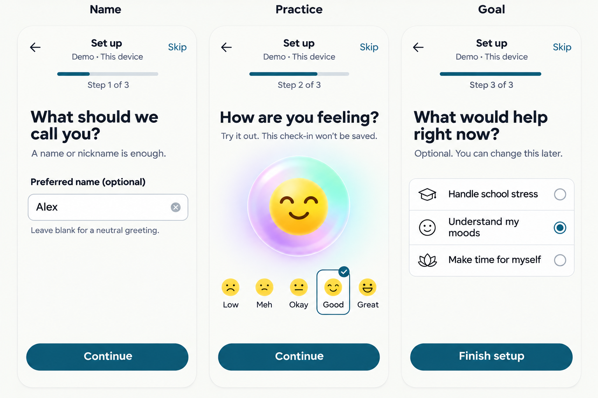
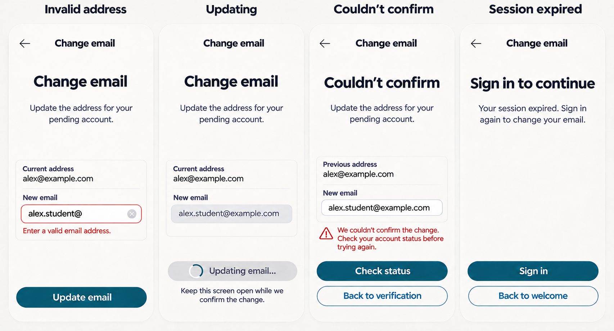
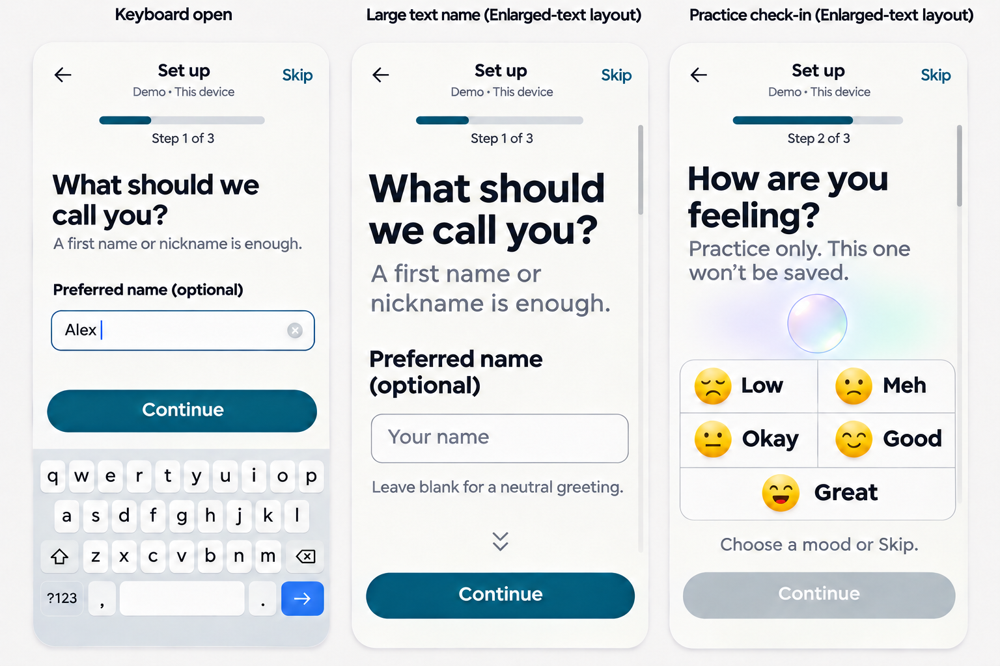
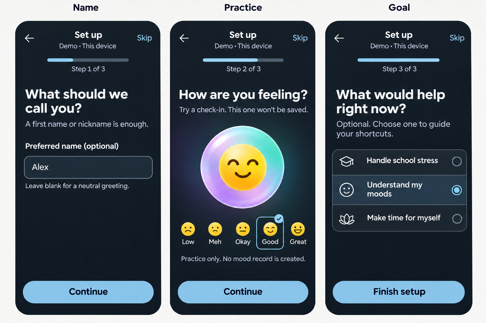

OKAYKABA? · NATIVE DESIGN REFINEMENT · REVIEW DRAFT
A quieter, more native first run.
Four boards, thirteen panels. Compact navigation, consistent controls and clearer recovery while keeping the mood orb and OkayKaba's identity.
Static mockups only. No app code, dependencies or backend changed. The brief guarded email-update state is a proposal for review. Dark setup is illustrated; dark account/accessibility states and simulator verification remain later checks.
1. Core setup · light
Compact navigator title, common progress track, quieter warm-white surfaces, a grouped goal list and a clear selected mood.
Open full-resolution board
2. Email update and recovery
Focused account forms without decorative mood artwork. Invalid input, committing, uncertain response and expired session each have distinct recovery.
Open full-resolution board
3. Keyboard and enlarged text
Readable labels and wrapping mood choices, a neutral-greeting path, and an action above the schematic keyboard.
Open full-resolution board
4. Core setup · dark
The same core setup controls and choices in a dark palette with a lighter denim accent and unchanged yellow mood content.
Open full-resolution board
Reference patterns
Publisher previews from How We Feel and Daylio informed the hierarchy and grouped controls. These are pattern references, not copied screens.
Design review boundary
First-run approval remains with you. Actual text scaling, TalkBack, keyboard behavior, native navigation, authentication and animation have not been verified. Today, Journal and Mood Calendar work has not started.